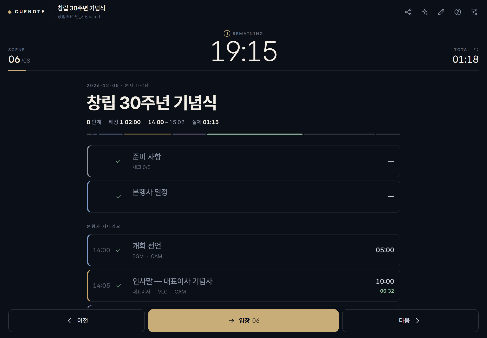
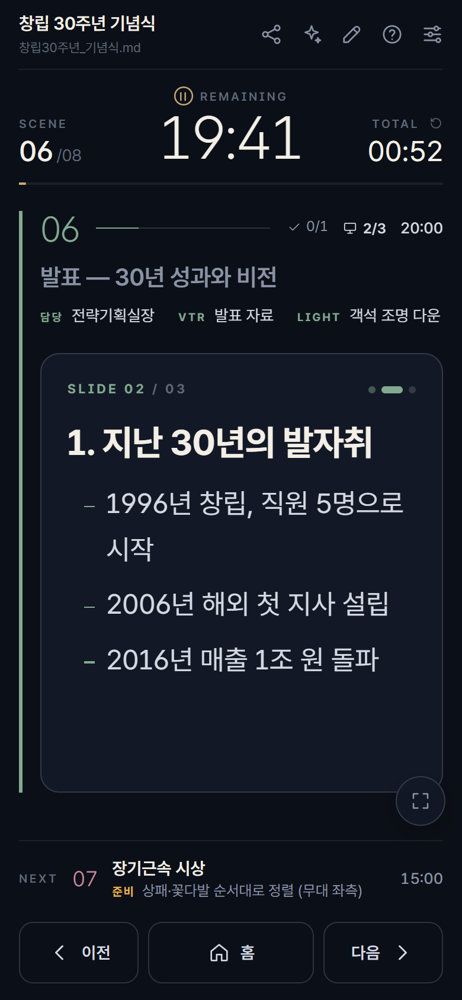
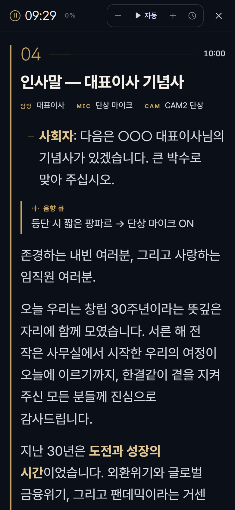

홈 일정
시작 시각만 적으면 단계마다 예정 시각을 자동 계산해요. 배정 시간과 실제 걸린 시간을 나란히 봐요.
CueNote · 큐노트 v1.3.5
행사 큐시트를 .md 한 파일로 만들면 전체 일정, 단계별 원고·슬라이드·타이머가 휴대폰 하나에 담겨요. 사회자·무대감독·발표자를 위한 현장 진행 앱이에요.
Introduction
식순표·사회자 대본·발표 노트·연출 큐가 여기저기 흩어져 있었다면, 이제 마크다운 한 파일로 모아 단계별로 넘기며 진행하세요.
시작 시각만 적으면 단계마다 예정 시각을 자동 계산해요. 배정 시간과 실제 걸린 시간을 나란히 봐요.
인사말·나레이션 원고는 한 화면씩, 발표는 슬라이드 한 장씩 넘겨요. 연출 큐·주의 박스·체크리스트도 함께.
지금 단계의 남은 시간(REMAINING)과 행사 전체 경과(TOTAL)를 동시에. 벽시계 기준이라 정확해요.
상·하단 바를 숨기고 원고만 크게. 화면 아래·위를 눌러 넘기고, 원고는 배정 시간에 맞춰 자동 스크롤.
블루투스 페이지 터너나 키보드로 손대지 않고 진행해요. 숫자 키로 원하는 단계에 바로 입장.
말로 설명하거나 행사 계획서를 올리면 AI 가 CueNote 행사로 만들어 줘요. 다른 AI 용 스킬도 제공해요.

Download
앱과 함께 AI 스킬, 샘플 행사 MD, 사용 설명서를 받을 수 있어요. 스킬과 MD 파일은 한 번에 받기로 모두 묶어서 받을 수도 있어요.
APK 17.1 MB · Android 7.0 이상 · 2026-11-15 업데이트
사용 설명서, AI 스킬(SKILL.md · claude.ai 용 zip), 샘플 행사 MD 2개를 zip 하나로. 16 KB
Installation
CueNote-1.3.5.apk 를 눌러요.설정 → 기능 → 스킬에서 cuenote-md-skill.zip 을 올려요. 대화에서 “CueNote 행사 MD 로 만들어 줘”.
GPT·프로젝트·Gem 의 지침(Instructions)에 SKILL.md 내용을 붙여 넣어요. 위의 SKILL.md 내용 복사를 쓰면 편해요.
프로젝트의 .claude/skills/cuenote-md/SKILL.md 위치에 넣어요.
다른 AI 가 만든 결과(```cuenote 블록 안의 내용)는 .md 파일로 저장해 앱의 MD 불러오기로 등록해요. 앱 설정 → 스킬에서 고친 스킬을 올리면 앱 안의 AI 도 그 규칙을 따라요.
How to use
MD 파일을 불러와서, 홈에서 단계를 고르고, 원고대로 넘기면 끝이에요.
.md 를 올려요. 처음이라면 샘플 행사 열기.
{type: slides} 를 붙이고 ### 마다 슬라이드 한 장.flow: 연속 으로 홈을 거치지 않고 넘어가요.
| 키 | 홈 | 단계 |
|---|---|---|
| →↓SpaceEnter | 선택한 단계 입장 | 다음 |
| ←↑PageUp | 이전 단계 선택 | 이전 |
| EscH | — | 홈 |
| F | — | 집중 모드 |
| 12… | 해당 번호 단계로 바로 입장 (1 → 2 를 연달아 누르면 12번) | |
| P | 타이머 시작·일시정지 | |
설정 → AI 연결에서 본인 API 키로 연결해요. OpenCode Zen · OpenRouter · BizRouter · ChatGPT · Claude · Gemini · 직접 입력(OpenAI 호환). 키는 기기에만 저장돼요.
“12월 20일 18시 송년회, 2시간, 대표 인사·시상·경품 추첨” → 계획안 카드 → “공연을 30분으로” 처럼 고치기 → 새 행사로 등록
행사 계획서·식순표를 올리면 CueNote MD 로 변환 → 미리보기·수정 → 새 행사로 등록 또는 현재 행사 일부 수정
--- 사이 프론트매터: title date venue start#·## 제목 한 줄 = 한 단계, 본문 없는 # = 섹션{time, color, who, type: slides, at, bgm, cam, mic…}- **사회자**: 멘트 · 일반 문단 = 원고 · - [ ] 체크리스트> [음향 큐] 연출 큐 · > [주의] 주의 박스 · 표 = 일정표mode: partial → 같은 제목은 교체, 새 제목은 추가, {remove: true} 삭제---
title: 창립 30주년 기념식
date: 2026-12-05
venue: 본사 대강당
start: 14:00
---
# 준비 사항
- [ ] 무선 마이크 배터리 교체
# 본행사 시나리오
## 인사말 {time: 10:00, color: amber, who: 대표이사}
- **사회자**: 대표이사님의 기념사가 있겠습니다.
> [음향 큐] 등단 시 짧은 팡파르
존경하는 내빈 여러분, …
## 발표 {time: 20:00, type: slides}
### 1. 지난 30년의 발자취
- 1996년 창립, 직원 5명으로 시작FAQ
지금은 안드로이드(7.0 이상) 앱만 제공해요.
불러온 행사와 설정은 기기 안에 저장돼요. AI 기능을 쓸 때만 인터넷과 본인 API 키가 필요하고, 키도 기기에만 저장돼요.
TXT·MD 문서는 앱에서 바로 변환돼요. HWP·HWPX·PDF·DOCX·XLSX·PPTX 는 PC 에서 실행하는 kordoc 문서 변환 서버를 연결해야 해요(고급 설정).
프론트매터에 mode: partial 을 넣고 바뀐 단계만 쓴 부분 수정 MD를 불러오면, 같은 제목의 단계만 교체·추가·삭제돼요. 앱의 AI 로 만들기에서 “현재 행사 고치기”로 말해도 돼요.
이 페이지에서 새 버전 APK 를 받아 같은 방법으로 설치하면 기존 앱 위에 덮어써져요. 현재 버전은 v1.3.5 이에요.